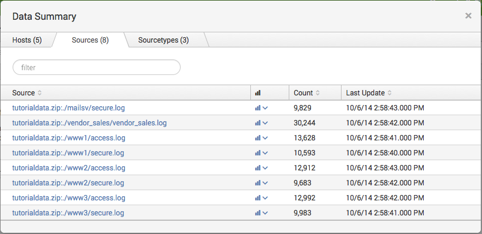
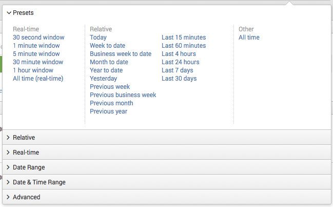
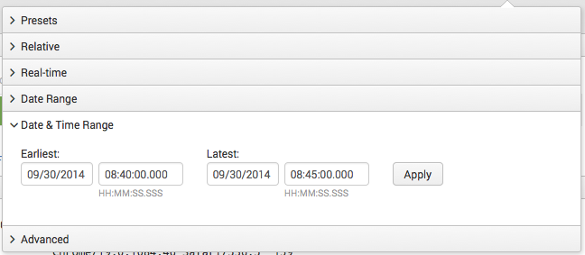
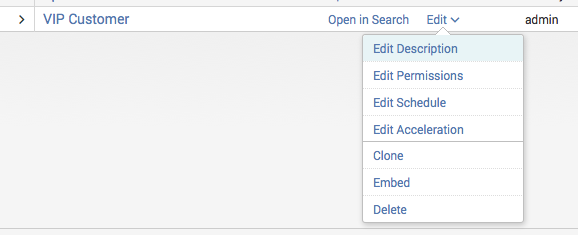
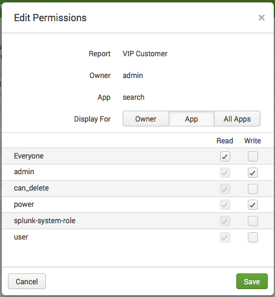
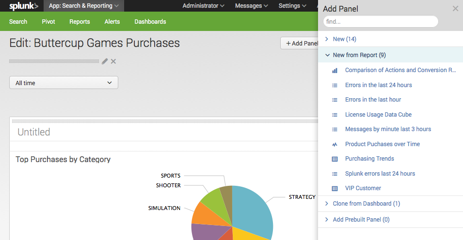
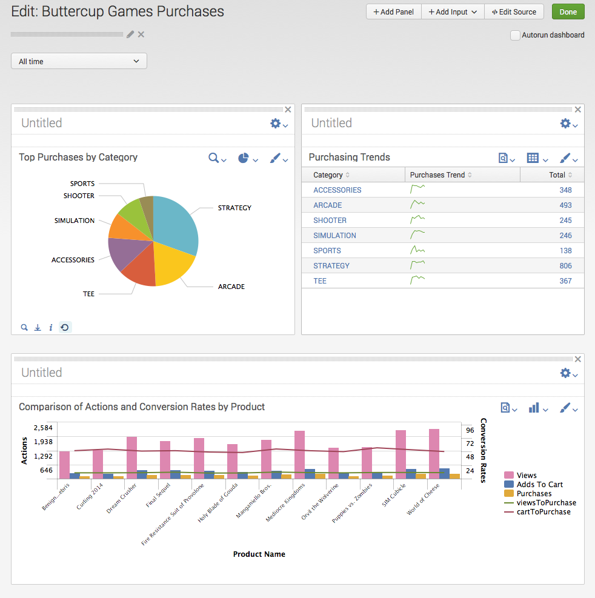

About the Search Tutorial
Splunk Search is the primary interface for using Splunk Enterprise to run searches, save reports, and create dashboards. This Search Tutorial is written for the user who is new to Splunk Enterprise and the Splunk Search feature.
Make a PDF
For a PDF version of this manual, click the red Download the Search Tutorial as PDF link below the table of contents on the left side of this page.
Note: Do not copy and paste searches directly from the PDF document into Splunk Web. In some cases, doing so causes errors because of hidden characters that are included in the PDF formatting.
Part 1: Downloading and installing Splunk Enterprise
What you need for this tutorial
Before you can start this tutorial, download, install, and start Splunk Enterprise.
If you have access to a running Splunk server instance, skip this section and start with Part 2: Getting started with Splunk.
System requirements
Splunk Enterprise runs on most computing platforms: Linux, UNIX, Windows, and Mac OS. For this tutorial, you need a computer or laptop that meets the specifications listed in the table.
| Platform | Minimum supported hardware capacity |
|---|---|
| Non-Windows platforms | 1x1.4 GHz CPU, 1 GB RAM |
| Windows platforms | Pentium 4 or equivalent at 2Ghz, 2GB RAM |
After you install Splunk, access it using a web browser. Splunk 6.0+ supports the latest versions of Firefox, Chrome, and Safari browsers.
This is a snapshot of the Splunk Enterprise system requirements. See the "System Requirements" topic in the Installation Manual.
Download the latest version of Splunk Enterprise
Download the latest version of Splunk Enterprise from the download page on Splunk.com.
If you are not logged into Splunk.com, click the download package to go to a registration form. If you do not have a Splunk.com account, sign up for one.
This tutorial focuses on Linux, Windows, and Mac OS X. The differences between OS-specific functionality are mentioned throughout this tutorial.
- Splunk provides three install options for Linux, an RPM download for RedHat, a DEB package for Debian Linux, and a tar file installer. For this tutorial, you can use any of these installers.
- Splunk provides two Windows installers, an MSI file and a compressed zip file. For this tutorial, use the MSI file graphical installer.
- Splunk provides two Mac OS X installers, a DMG package and a tar file installer. For this tutorial, use the DMG packaged graphical installer.
Splunk licenses
Splunk licenses limit the volume of data that your Splunk installation can index in a single day. Splunk runs with either an Enterprise license or a Free license. When you download Splunk for the first time, you get an Enterprise trial license that expires after 60 days. This trial license entitles the server to 500 MB per day indexing volume and all of the Enterprise features. See more about "Types of Splunk licenses" in the Admin Manual.
Next steps
The remaining topics of this section take you through installing and starting Splunk Enterprise.
Install Splunk Enterprise on Linux, Windows, or Mac OS X
This topic provides installation instructions for the following platforms and packages:
- Windows MSI graphical installer
- Mac OSX DMG package installer
- Linux RPM, DEB, and .tar file installers
For other installers or another supported OS, see the "Step-by-step installation instructions" for that platform. After installing Splunk Enterprise, you can continue to Part 2: Getting started with Splunk Enterprise.
Windows installation instructions
Follow these steps to install Splunk Enterprise using the MSI graphical installer.
1. To start the installer, double-click the splunk.msi file.
2. In the Welcome panel, click Next.
3. Read the licensing agreement and select "I accept the terms in the license agreement" check box.
4. Click Next.
5. In Customer Information, enter the requested details and click Next.
6. In the Destination Folder panel, click Change... to specify a different location, or click Next to accept the default value.
Splunk Enterprise is installed by default into the \Program Files\Splunk directory.
7. In the Logon Information panel, select Local system user and click Next.
To learn about the other user option, see the instructions for "installing Splunk Enterprise on Windows" in the Installation manual.
8. After you specify a user, the pre-installation summary panel appears. Click Install.
9. In the Installation Complete panel, select the Launch browser with Splunk and Create Start Menu Shortcut check boxes
10. Click Finish.
The installation finishes, Splunk Enterprise starts, and Splunk Web launches in a supported browser.
Mac OS X installation instructions
Follow these steps to install Splunk using the DMG graphical installer.
1. Navigate to the folder or directory where the installer is located.
2. Double-click on the DMG file.
A Finder window containing splunk.pkg opens.
3. Double-click on splunk.pkg.
The Splunk installer opens and displays the Introduction, which lists version and copyright information.
4. Click Continue.
The Select a Destination window opens.
5. Choose a location to install Splunk.
- To install in the default directory,
/Applications/splunk, click the hard drive icon. - To select a different location, click Choose Folder.
6. Click Continue.
The pre-installation summary appears. I
7. (Optional) To make changes, do one of the following actions.
- Click Change Install Location to choose a new folder.
- Click Back to go back a step.
8. Click Install.
Your installation begins.
8. When your install finishes, click Finish.
The installer places a shortcut on the Desktop.
Linux installation instructions
Splunk Enterprise provides three Linux installer options: an RPM, a DEB, and a compressed .tar file. Installation instructions for each installer follows.
Note: You must have access to a command-line interface (CLI). When you type in the installation commands, replace splunk_package_name with the file name of Splunk Enterprise installer.
By default, Splunk Enterprise installs into the /opt/splunk directory on Linux.
To install the Splunk RPM,
1. Type the following into the CLI. Use the optional --prefix flag to install Splunk into a different directory.
rpm -i --prefix=/opt/new_directory splunk_package_name.rpm
To install the Splunk DEB package,
1. Type the following into the CLI. You can only install the Splunk DEB into the default /opt/splunk directory.
dpkg -i splunk_package_name.deb
To install Splunk using the compressed tar file,
1. Expand the file into the appropriate directory using the tar command. The default install directory is /splunk in the current working directory. To install into a specific directory, such as /opt/splunk, use the -C option.
tar xvzf splunk_package_name.tgz -C /opt
For detailed instructions about installing Splunk Enterprise on Linux, see the "Step-by-step Linux installation instructions" in the Installation manual.
Next steps
Continue to "Start Splunk Enterprise and launch Splunk Web" to start Splunk.
Start Splunk Enterprise and launch Splunk Web
After you download and install Splunk Enterprise, you need to start Splunk Enterprise and launch Splunk Web.
Start Splunk Enterprise on Windows
After the Windows installation finishes, Splunk Enterprise starts and launches Splunk Web in a supported browser.
1. If Splunk Enterprise did not start, you have the following options.
- Start Splunk Enterprise from the Start menu.
- Use the Windows Services Manager to start Splunk Enterprise.
- Open a
cmdwindow, go to\Program Files\Splunk\bin, and type
> splunk start
Start Splunk Enterprise on Linux
After you install Splunk Enterprise, use the Splunk CLI to start it.
1. (Optional) You can simplify the CLI access by adding a SPLUNK_HOME environment variable for the top level installation directory and adding $SPLUNK_HOME/bin to your shell's path.
If you installed in the default location for Linux, your export path should look like this:
# export SPLUNK_HOME=/opt/splunk
# export PATH=$SPLUNK_HOME/bin:$PATH
For information on how to access the CLI, see "About the CLI" in the Admin manual.
2. Type the following to start Splunk Enterprise.
$SPLUNK_HOME/bin/splunk start
Accept the Splunk Enterprise License
After you run the start command, Splunk Enterprise displays the license agreement and prompts you to accept the license before the startup sequence continues.
If you have problems starting Splunk Enterprise, see "Start Splunk Enterprise for the first time" in the Installation manual.
Other commands you might need
If you need to stop, restart, or check the status of your Splunk Enterprise server, use these CLI commands:
$ splunk stop
$ splunk restart
$ splunk status
Start Splunk Enterprise on Mac OS X
In Mac OS X, you can start Splunk Enterprise from the Finder.
1. Double-click the Splunk icon on the Desktop to launch the Splunk helper application, entitled "Splunk's Little Helper".
The first time you run the helper application, it notifies you that it needs to perform a brief initialization.
2. Click OK to allow Splunk to initialize and set up the trial license.
After the helper application loads, it displays a dialog box with several options:
- Start and Show Splunk: This option starts Splunk Enterprise and directs your web browser to open a page to Splunk Web.
- Only Start Splunk: This option starts Splunk Enterprise, but does not open Splunk Web in a browser.
- Cancel: Tells the helper application to quit. This action does not affect the Splunk Enterprise instance itself, only the helper application.
After you make your choice, the helper application performs the requested application and stops. Run the helper application again to either show Splunk Web or stop Splunk Enterprise.
Use the helper application to stop Splunk Enterprise if it is running.
Launch Splunk Web
At the end of the startup sequence, Splunk gives you a message about where to access Splunk Web:
The Splunk Web interface is at http://localhost:8000
Splunk Web runs by default on port 8000 of the host on which it is installed. If you use Splunk on your local machine, the URL to access Splunk Web is http://localhost:8000.
If you use an Enterprise license, when you launch Splunk Enterprise for the first time, this login screen appears. Follow the message to authenticate with the default credentials.
username: admin
password: changeme
If you are using a Free license, you do not need to authenticate to use Splunk Enterprise. In this case, when you start Splunk Enterprise you do not see this login screen. Instead, you go directly to Splunk Home or whatever is set as the default app for your account.
When you sign in with your default password, Splunk asks you to create a new password. You can either skip this or change your password to continue.
The first page you see is Splunk Home.
Next steps
This completes Part 1 of the Search Tutorial. Continue to Part 2: Getting started with Splunk.
Part 2: Getting started with Splunk Enterprise
This topic discusses navigating the different views in Splunk Web.
About Splunk Home
Splunk Home is your interactive portal to the data and apps accessible from this Splunk instance. The main parts of Home include the Splunk Enterprise navigation bar, the Apps menu, the Explore Splunk Enterprise panel, and a custom default dashboard (not shown here).
Apps
The Apps panel lists the apps that are installed on your Splunk instance that you have permission to view. Select the app from the list to open it.
For an out-of-the-box Splunk Enterprise installation, you see one App in the workspace: Search & Reporting. When you have more than one app, you can drag and drop the apps within the workspace to rearrange them.
You can do two actions on this panel:
- Click the gear icon to view and manage the apps that are installed in your Splunk instance.
- Click the plus icon to browse for more apps to install.
Explore Splunk Enterprise
The options in the Explore Splunk Enterprise panel help you to get started using Splunk Enterprise. Click on the icons to open the Add Data view, browse for new apps, open the Splunk Enterprise Documentation, or open Splunk Answers.
About the Splunk bar
Use the Splunk bar to navigate your Splunk instance. It appears on every page in Splunk Enterprise. You can use it to switch between apps, manage and edit your Splunk configuration, view system-level messages, and monitor the progress of search jobs.
The following screenshot shows the Splunk bar in Splunk Home.

The Splunk bar in another view, such as the Search & Reporting app's Search view, also includes an App menu next to the Splunk logo.
Return to Splunk Home
Click the Splunk logo on the navigation bar to return to Splunk Home from any other view in Splunk Web.
The Settings menu lists the configuration pages for Knowledge objects, Distributed environment settings, System and licensing, Data, and Authentication settings. If you do not see some of these options, you do not have the permissions to view or edit them.

The User menu here is called "Administrator" because that is the default user name for a new installation. You can change this display name by selecting Edit account and changing the Full name. You can also edit the time zone settings, select a default app for this account, and change the account's password. The User menu is also where you Logout of this Splunk installation.
All system-level error messages are listed here. When there is a new message to review, a notification displays as a count next to the Messages menu. Click the X to remove the message.
The Activity menu lists shortcuts to the Jobs, Triggered alerts, and System Activity views.
- Click Jobs to open the search jobs manager window, where you can view and manage currently running searches.
- Click Triggered Alerts to view scheduled alerts that are triggered. This tutorial does not discuss saving and scheduling alerts. See "About alerts" in the Alerting Manual.
- Click System Activity to see Dashboards about user activity and status of the system.
Help
Click Help to see links to Video Tutorials, Splunk Answers, the Splunk Support Portal, and online Documentation.
Find
Use Find to search for objects within your Splunk Enterprise instance. Find performs non-case sensitive matches on the ID, labels, and descriptions in saved objects. For example, if you type in "error", it returns the saved objects that contain the term "error".
These saved objects include Reports, Dashboards, Alerts, and Data models. The results appear in the list separated by the categories where they exist.
You can also run a search for error in the Search & Reporting app by clicking Open error in search.
Next steps
Now that you are more familiar with Splunk Web, add some data to Splunk Enterprise.
Part 3: Getting data into Splunk Enterprise
About getting data into Splunk Enterprise
Before you can use Splunk Enterprise, you need to add data to it. When the data source is defined, Splunk Enterprise begins to index the data stream and transform it into a series of individual events that you can view and search. If the results are not what you want, tweak the indexing process until you are satisfied.
This topic is a brief overview of the types of data that you can add to Splunk, the ways to get that data into Splunk, and where Splunk stores that data after you add it. For more information, see the Getting Data In Manual.
What kinds of data?
Splunk Enterprise works with any data. In particular, all IT streaming and historical data. This data is from event logs, web logs, live application logs, network feeds, system metrics, change monitoring, message queues, archive files, and so on.
The data can be on the same machine as the Splunk indexer (local data), or it can be on another machine (remote data). For information on local versus remote data, see "Where is my data?" in the Getting Data In manual.
In general, categorize input sources as follows:
- Files and directories: A lot of data you might be interested in comes directly from files and directories.
- Network events: Splunk can index remote data from any network port and SNMP events from remote devices.
- Windows sources: The Windows version of Splunk includes a wide range of Windows-specific inputs, including Windows Event Log, Windows Registry, WMI, Active Directory, and Performance monitoring.
- Other sources: Splunk also supports other input sources, such as FIFO queues and scripted inputs for getting data from APIs and other remote data interfaces.
For information about data and Splunk Enterprise, see "What Splunk can index" in the Getting Data In manual.
How to specify data inputs
You add new types of data to Splunk by defining the input sources. There are a number of ways to do this:
- Splunk Web. You can configure most inputs using the Splunk Web data input pages. These views provide a GUI-based approach to configuring inputs. Use this method to add the tutorial data into Splunk.
- Apps. Splunk has apps and add-ons that offer preconfigured inputs for different types of data sources. For more information, see "Use apps."
- Splunk's CLI. You can use the CLI (command line interface) to configure most types of inputs. See "Use the CLI."
- The inputs.conf configuration file. When you specify your inputs with Splunk Web or the CLI, the configurations are saved in an inputs.conf file. To handle some advanced data input requirements, you might need to edit that file directly. See "Edit inputs.conf" in the Getting Data In manual.
For more information on configuring inputs, see "Configure your inputs" in the Getting Data In manual.
Where Splunk stores data
A Splunk data repository is called an index. During indexing (or event processing), Splunk processes the incoming data stream to enable fast search and analysis, storing the results in the index as events.
Events are stored in the index as a group of files that fall into two categories:
- Rawdata, which is the raw data in a compressed form.
- Index files and some metadata files that point to the raw data.
These files reside in sets of directories, called buckets, organized by age. For information, see "How Splunk stores indexes" in the Managing Indexers and Clusters manual.
Splunk, by default, puts all user data into a single, preconfigured index. It also uses several other indexes for internal purposes. You can add new indexes and manage existing ones to meet your data requirements. See "About managing indexes" in the Managing Indexers and Clusters manual.
Next steps
Now that you're more familiar with Splunk data inputs and indexes, see "Get the tutorial data into Splunk Enterprise."
Get the tutorial data into Splunk Enterprise
This topic walks you through downloading the tutorial data set and adding it into Splunk Enterprise. You can complete this tutorial in several hours, but if you want to spread it out over a few days, download a new sample data file and add it.
Download the sample data file
Download and do not uncompress the tutorial data file here:
http://docs.splunk.com/images/Tutorial/tutorialdata.zip
This tutorial data file is updated daily and shows events timestamped for the previous 7 days.
Add the sample data into Splunk Enterprise
1. Log into Splunk.
If you are not in Splunk Home, click the Splunk logo on the Splunk bar to go to Splunk Home.
2. Under Explore Splunk Enterprise, click Add data.

The Add Data view opens. The Add Data displays three options for adding data, lists of common data types, and add-ons you can use to extend Splunk Enterprise's capabilities to add data.
3. Under "How do you want to add data?", click Upload.
4. Under Select Source, click Select File to browse for the tutorial data or Drop the data file into the outlined box.

Because the tutorial data file is an archived data file, the next step in the Add Data workflow changes from Set Sourcetype to Input Settings.
5. Click Next to continue to Input Settings.
Under Input Settings, you can override the default settings for Host, Source type, and Index.
6. Modify the host settings to assign host names using a portion of the path name:

6.1. Select Segment in path from the menu.
6.2. Type in 1 for the segment number.
7. Click Review to review your input settings.

8. Click Submit.

9. To confirm that the data added successfully, click Start Searching.
This opens the Search view and runs a search for the tutorial data source.
Next steps
Learn more about the Search app and start searching the tutorial data.
Part 4: Using Splunk Search
About the Search dashboard
In the previous chapter, you learned about the types of data Splunk Enterprise works with, downloaded the tutorial sample data, and added the data into your Splunk index. This section describes how to use the different elements that make up Splunk Search.
Find Splunk Search
1. From Splunk Home, click Search & Reporting under Apps.
This opens the Search & Reporting app's Search view.
Before you run a search, the Search view looks like this.
The App bar, which is below the Splunk bar, lets you navigate the different views in the Search & Reporting app.
Before you run a search
Before you run a search, the main parts of Search are the search bar, the time range picker, the How to search panel, and the What to search panel.
Search bar
Use the search bar to run your searches in Splunk Web. Type in your search string and hit enter or click the spyglass icon to the right of the time range picker.
Time range picker
Use the time range picker to retrieve events over a specific time period. For real-time searches you can specify a window over which to retrieve events. For historical searches, you can restrict your search by specifying a relative time range (15 minutes ago, Yesterday, and so on) or a specific date and time range. The time range picker has many preset time ranges that you can select from, but you can also enter a custom time range.
The time range picker is discussed in detail in, "About the time range picker".
How to search
The "How to search" panel links you to the Search Tutorial and Search Manual to learn about how to write searches.
What to search
The "What to search" panel displays a summary of the data that is installed on this Splunk instance and that you are authorized to view. If you click Data Summary, the Data Summary dialog box opens.
Data summary
The Data Summary dialogue displays three tabs: Hosts, Sources, Sourcetypes.
The host of an event is the host name, IP address, or fully qualified domain name of the network machine from which the event originated.
The source of an event is the file or directory path, network port, or script from which the event originated.

The source type of an event tells you what kind of data it is, usually based on how it is formatted. This classification lets you search for the same type of data across multiple sources and hosts.
The source types for the tutorial data are:
- access_combined_wcookie: Apache web server logs
- secure: Secure server logs
- vendor_sales: Global sales vendors
For information about how Splunk Enterprise source types your data, read "Why source types matter" in the Getting Data In manual.
After you run a search
Type the following into the searchbar:
buttercupgamesThe New Search page opens.
The search bar and time range picker are still available in this view, but the dashboard updates with many more elements: search action buttons and search mode selector; counts of events; job status bar; and tabs for Events, Statistics, and Visualizations.
The next topics in this chapter discuss each of these parts of the Search view.
Next steps
Continue reading to learn about restricting searches to a time range.
About the time range picker
Use the time range picker, which is to the right of the search bar, to set time boundaries on your searches.

You can restrict the search to Preset time ranges, custom Relative time ranges, and custom Real-time ranges or specify a Date Range or a Date & Time Range.
This tutorial uses Presets and Relative time range options.
Time range presets
The time range picker Presets are a set of time ranges that are defined in Splunk Enterprise out-of-the-box.

By default, the time range for a search is set to All time. When you search large volumes of data, results return faster when you run the search over a smaller time period. To change the default time range for your searches, see "Change the default selected time range" in the Search manual.
When troubleshooting an issue where you know the approximate range for when the issue occurred, narrow the time range of the search to that time period. For example, to investigate an incident that occurred yesterday, select Yesterday or Last 24 hours. To investigate an incident that occurred 10 minutes ago, select Last 15 minutes or Last 60 minutes. Then, adjust the time range as needed in your investigation.
Custom time ranges
If one of the Presets is not what you want, you can define a custom time range, such as a Relative time range or a Date & Time Range.
To run a search over the last two hours, use the Relative time range option.
For example, you can specify the earliest time to read "2 Hours Ago" and latest time to be either "now" or "Beginning of the current hour".
The timestamps adjust to show you the earliest and latest timestamps you specify.
You can use the Date & Time Range options to specify earliest and latest times using a calendar and timestamp.

For example, to troubleshoot an issue that took place September 30th at 8:42 PM, you can specify the earliest time to be 09/30/2014 08:40:00.000 and the latest time to be 09/30/2014 08:45:00.000.
Next steps
Continue reading to learn about search actions and search modes.
About search actions and modes
This topic explains search actions and search modes that you can use to control your search experience.
Control search job progress
After you launch a search, you can pause it and stop it using the buttons under the search bar. Also, you can access and manage information about the search's job without leaving the Search page.
Click Job and choose from the available options there.
- Edit job settings. Select this option to open the Job Settings dialog box, where you can change the job's read permissions, extend the job's lifespan, and get a URL for the job that you can use to share the job with others or put a link to the job in your browser's bookmark bar.
- Send job to the background. Select this option if the search job is slow and you want to run the job in the background while you work on other Splunk Enterprise activities (including running a new search job).
- Inspect job. Opens a separate window and displays information and metrics for the search job using the Search Job Inspector.
- Delete job. Use this option to delete a job that is running, is paused, or which has finalized. After you delete the job, you can save the search as a report.
See "Saving and sharing jobs in Splunk Web" in the Knowledge Manager manual.
Change the search mode
The Search mode controls the search experience. You can set it to speed up searches by cutting down on the event data it returns (Fast mode), or you can set it to return as much event information as possible (Verbose mode). In Smart mode (the default setting) it toggles search behavior based on the type of search you're running.

See "Set search mode to adjust your search experience" in the Search manual.
Save the results
The Save as menu lists options for saving the results of a search as a Report, Dashboard Panel, Alert, and Event type.
Other search actions
Between the job progress controls and search mode selector are buttons that let you Share, Export, and Print the results of a search.
- The Share option shares the search job. This option extends the job's lifetime to seven days and set the read permissions to Everyone.
- The Export option exports the results. Select this option to output to CSV, raw events, XML, or JSON and specify the number of results to export.
- The Print option sends the results to a printer that has been configured.
Use the Close button to cancel the search and return to Splunk Home.
Next steps
Continue to the next topic for a discussion about the format of the search results.
About the search results tabs
This topic discusses the four search results tabs: Events, Patterns, Statistics, and Visualizations.
When you run a search, the results tabs populate depending on the the type of search commands used in the search. If your search retrieves events, you can view the results in the Events tab and the Patterns tab, but not in the other tabs. If your search includes transforming commands, you can view the results in the Statistics and Visualization tabs.
Events
The keyword search used in this screenshot retrieves events and populates the Events results tab.

The Events tab displays the timeline of events, the fields sidebar, and the events viewer. To change the event view, use the List and Format options. By default, the events appear as a list that is ordered starting with the most recent event. In each event, the matching search terms are highlighted.
Timeline of events: A visual representation of the number of events that occur at each point in time. As the timeline updates with your search results, you might notice clusters or patterns of bars. The height of each bar indicates the count of events. Peaks or valleys in the timeline can indicate spikes in activity or server downtime. Thus, the timeline highlights patterns of events or investigates peaks and lows in event activity. The timeline options are located above the timeline. You can zoom in, zoom out, and change the scale of the chart.
Fields sidebar: When you index data, Splunk by default extracts information from your data that is formatted as name and value pairs, which we call fields. When you run a search, Splunk lists all of the fields it discovers in the fields sidebar next to your search results. You can select other fields to show in your events. Also, you can hide this sidebar and maximize the results area.
- Selected fields are set to be visible in your search results. By default, host, source, and sourcetype appear.
- Interesting fields are other fields that Splunk has extracted from your search results.
Patterns
The Patterns tab simplifies event pattern detection. It displays a list of the most common patterns among the set of events returned by your search. Each of these patterns represents a number of events that all share a similar structure.
You can click on a pattern to:
- View the approximate number of events in your results that fit the pattern.
- See the search that returns events with this pattern.
- Save the pattern search as an event type, if it qualifies.
- Create an alert based on the pattern.
Read more about how to "Identify event patterns with the Patterns tab" in the Search Manual.
Statistics
The Statistics tab populates when you run a search with transforming commands such as stats, top, chart, and so on. The previous keyword search for "buttercupgames" does not display any results in this tab because it does not have any transforming commands.
Instead, the tab displays options for creating reports in Pivot, Quick Reports, and links you to documentation about transforming Search Commands.
If you run a non-transforming search and want to make tables or charts based on it, click Pivot to open the search in the Pivot editor. To learn more about Pivot, read the Data model and Pivot Tutorial and the Pivot Manual.
With a transforming search, such as one to find the popular categories of items sold on the Buttercup Games online store, the Statistics tab displays a table of results.
Visualizations
Transforming searches also populate the Visualization tab. The results area of the Visualizations tab includes a chart and the statistics table used to generated the chart.
You can change the type and Format of the visualization using the menus above the visualization chart area. The visualization type menu displays the name of the selected type. By default, the visualization type is the Column chart.
When Recommended displays next to a chart type, it indicates the types that Splunk Enterprise suggests based on the transforming search that produced the results.
Next steps
This section explained different views in the Search & Reporting app that you need to know before you start searching.
Part 5: Searching the tutorial data
Start searching
In this section, you start searching that tutorial data. This topic discusses searches that retrieve events from the index.
Before you can start this section, you need to first download and add the tutorial data.
What to search
1. Click Search in the App navigation bar.
2. In the Search landing page, Look at the What to search panel.
3. Click Data Summary.
Review the tutorial data, which represents a fictitious online game store, called Buttercup Games. The data summary tells you where the data comes from and what type of data it is. There are five hosts, eight sources, and three source types. The three source types are Apache web access logs (access_combined_wcookie), Linux secure formatted logs (secure), and the vendor sales log (vendor_sales).
Most of this tutorial covers searching the Apache web access logs and correlating it with the vendor sales logs.
Search assistant
You have data for an online store that sells a variety of games. Try to find out how many errors have occurred on the site.
1. Open Splunk Search, and type buttercupgames into the search bar.
As you type, the Search Assistant opens. There are two parts to search assistant: the matching search history and search help.
Search assistant suggests completions for your search based on terms it matches in your event data. These search completions are listed under Matching terms or Matching searches. It does not list terms or phrases that do not exist in your event data. Search assistant also displays the number of matches for the search term. This number gives you an idea of how many search results Splunk will return. Here, buttercupgames appears in 36,819 events.
Here, search assistant also provides Steps to help you learn How to Search. Step 1 explains searches to retrieve events with examples for searching with terms, quoted phrases, boolean operators, wildcards, and field values. Step 2 introduces how to use search commands.
Search assistant has more uses after you start learning the search language. When you type in search commands, search assistant displays the command syntax and usage.
If you do not want search assistant to open automatically, click Auto Open to toggle it off. You can click the down arrow below the search bar to open it back up again.
Retrieve events from the index
1. Type in keywords to find errors or failures and use Boolean operators: AND, OR, NOT.
buttercupgames (error OR fail* OR severe)
Boolean operators need to be capitalized. The AND directive is implied between terms, so you do not need to write it. You can use parentheses to group terms. When evaluating boolean expressions, precedence is given to terms inside parentheses. OR clauses are evaluated before AND or NOT clauses.
The asterisk wildcard is used to match terms that start with "fail". These terms can include: failure, failed, and so on.
This search retrieves 427 matching events.
The search command
Each time you type keywords and phrases, you implicitly use the search command to retrieve events from a Splunk index. The search command lets you use keywords, quoted phrases, field values, boolean expressions, and comparison expressions to specify which events you want to retrieve.
You can also explicitly invoke the search command later in the pipeline to filter search results. Read "Use the search command" in the Search manual.
Next steps
Go to "Use fields to search" to learn how to search with fields.
Use fields to search
You can not take full advantage of the more advanced search features in Splunk Enterprise without understanding what fields are and how to use them.
About fields
When you look at the Data Summary in the search view, you see tabs for the Hosts, Sources, and Source Types that described the type of data you added to your Splunk index.
These are also default fields (host, source, sourcetype) that Splunk Enterprise extracts from the data during indexing. They help to specify exactly which events you want to retrieve from the index.
What are fields?
Fields exist in machine data in many forms. Often, a field is a value (with a fixed, delimited position on the line) or a name and value pair, where there is a single value to each field name. A field can be multivalued, that is, it can appear more than once in an event and has a different value for each appearance.
Some examples of fields are clientip for IP addresses accessing your Web server, _time for the timestamp of an event, and host for domain name of a server. One of the more common examples of multivalue fields is email address fields. While the From field will contain only a single email address, the To and Cc fields have one or more email addresses associated with them.
In Splunk Enterprise, fields are searchable name and value pairings that distinguish one event from another because not all events will have the same fields and field values. Fields let you write more tailored searches to retrieve the specific events that you want.
See "About fields" in the Knowledge Manager Manual.
Extracted fields
Splunk extracts fields from event data at index-time and at search-time. See "Index time versus search time" in the Managing Indexers and Clusters manual.
Default and other indexed fields are extracted for each event that is processed when that data is indexed. Default fields include host, source, and sourcetype. For a list of the default fields, see "Use default fields" in the Knowledge Manager Manual.
Splunk Enterprise extracts different sets of fields, when you run a search. See "When Splunk Enterprise extracts fields" in the Knowledge Manager Manual.
You can also use the field extractor to create custom fields dynamically on your local Splunk instance. The field extractor lets you define any pattern for recognizing one or more fields in your events. See "Build field extractions with the field extractor" in the Knowledge Manager Manual.
Find and select fields
1. Go to the Search dashboard and type the following into the search bar:
sourcetype="access_*"Search for fields use the syntax: fieldname="fieldvalue" . Field names are case sensitive, but field values are not. You can use wildcards in field values. Quotes are required when the field values include spaces.
This search indicates that you want to retrieve only events from your web access logs and nothing else.
This search uses the wildcard access_* to match any Apache web access sourcetype, which can be access_common, access_combined, or access_combined_wcookie.
2. In the Events tab, scroll through the list of events.
If you are familiar with the access_combined format of Apache logs, you recognize some of the information in each event, such as:
- IP addresses for the users accessing the website.
- URIs and URLs for the pages requested and referring pages.
- HTTP status codes for each page request.
- GET or POST page request methods.
These are events for the Buttercup Games online store, so you might recognize other information and keywords, such as Arcade, Simulation, productId, categoryId, purchase, addtocart, and so on.
To the left of the events list is the Fields sidebar. As Splunk Enterprise retrieves the events that match your search, the Fields sidebar updates with Selected fields and Interesting fields. These are the fields that Splunk Enterprise extracted from your data.

Selected Fields are the fields that appear in your search results. The default fields host, source, and sourcetype are selected. These fields appear in all the events.
You can hide and show the fields sidebar by clicking Hide Fields and Show Fields, respectively.
3. Click All Fields.
The Select Fields dialog box opens, where you can select the fields to show in the events list.
You see more default fields, which includes fields based on each event's timestamp (everything beginning with date_*), punctuation (punct), and location (index).
Other field names apply to the web access logs. For example, there are clientip, method, and status. These are not default fields. They are extracted at search time.
Other extracted fields are related to the Buttercup Games online store. For example, there are action, categoryId, and productId.
4. Select action, categoryId, and productId and close the Select Fields window.
The three fields appear under Selected Fields in the sidebar. The selected fields appear under the events in your search results if they exist in that particular event. Every event might not have the same fields.
The fields sidebar displays the number of values that exist for each field. These are the values that Splunk Enterprise indentifies from the results of your search.
5. Under Selected Fields, click the action field.
This opens the field summary for the action field.
In this set of search results, Splunk Enterprise found five values for action, and that the action field appears in 49.9% of your search results.
6. Close this window and look at the other two fields you selected, categoryId (what types of products the shop sells) and productId (specific catalog number for products).
7. Scroll through the events list.
If you click on the arrow next to an event, it opens up the list of all fields in that event.
Use this panel to view all the fields in a particular event and select or deselect individual fields for an individual event.
Run more targeted searches
The following are search examples using fields.
Example1: Search for successful purchases from the Buttercup Games store.
sourcetype=access_* status=200 action=purchaseThis search uses the HTTP status field, status, to specify successful requests and the action field to search only for purchase events.
You can search for failed purchases in a similar manner using status!=200, which looks for all events where the HTTP status code is not equal to 200.
sourcetype=access_* status!=200 action=purchaseExample 2: Search for general errors.
(error OR fail* OR severe) OR (status=404 OR status=500 OR status=503)This doesn't specify a source type. The search retrieves events in both the secure and web access logs.
Example 3: Search for how many simulation games were bought yesterday.
Select the Preset time range, Yesterday, from the time range picker and run:
sourcetype=access_* status=200 action=purchase categoryId=simulationThe count of events returned are the number of simulation games purchased.
To find the number purchases for each type of product sold at the shop, run this search for each unique categoryId. For the number of purchases made each day of the previous week, run the search again for each time range.
Next steps
Fields also let you take advantage of the search language, create charts, and build charts. Continue to "Use the search language" to learn how to use the search language.
Use the search language
The searches you have run to this point have retrieved events from your Splunk index. You were limited to asking questions that could only be answered by the number of events returned.
For example, in the last topic, you ran this search to see how many simulation games were purchased:
sourcetype=access_* status=200 action=purchase categoryId=simulationTo find this number for the days of the previous week, you have to run it against the data for each day of that week. To see which products are more popular than the other, you have to run the search for each of the eight categoryId values and compare the results.
Learn with search assistant
In the "Start searching" topic, you were introduced to the search assistant. This section explains in more detail one of the ways you can use the search assistant to learn about the Splunk search processing language and construct searches.
1. Return to the search dashboard and restrict your search to Yesterday:
sourcetype=access_* status=200 action=purchaseAs you type in the search bar, search assistant opens with syntax and usage information for the search command (on the right side). If search assistant doesn't open, click the down arrow under the left side of the search bar.
You've seen before that search assistant displays typeahead for keywords that you type into the search bar. It also explains briefly how to search.
2. Type a pipe character, " | ", into the search bar.
The pipe indicates to Splunk that you're about to use a command, and that you want to use the results of the search to the left of the pipe as the input to this command. You can pass the results of one command into another command in a series, or pipeline, of search commands.
You want Splunk to give you the most popular items bought at the online store.
3. Under common next commands, click top.
Splunk Enterprise appends the top command to your search string.
According to search assistant's description and usage examples, the top command "displays the most common values of a field."
4. Type the categoryId field into the search bar to complete your search.
sourcetype=access_* status=200 action=purchase | top categoryId5. Run the search.
The count of events under the search bar indicates the number of events retrieved that match the search for sourcetype=access_* status=200 action=purchase. The results of the top command appear in the Statistics tab.
View reports in the Statistics tab
The results of a search are reports. The top command is a transforming command and returns a tabulated report for the most common values of categoryId. You can view the results of transforming searches in the Statistics tab.
In this search for successful (status=200) purchases (action=purchase), Splunk Enterprise found seven different category IDs. This report lists the category ID values in order from highest to lowest.
The top command also returns two new fields: count is the number of times each value of the field occurs, and percent is how large that count is compared to the total count. See more about the top command in the Search reference manual.
View and format reports in the Visualization tab
You can also view the results of transforming searches in the Visualizations tab where you can format the chart type. For example, a search using the top command can be illustrated with a pie chart.
1. Click the Visualization tab.
By default, the Visualizations tab opens with a Column Chart.
2. Click Column to open the visualization type selector.
Column, Bar, and Pie charts are recommended for this data set.
3. Select Pie.
Now, your report looks like this:
You can turn on drill down to delve deeper into the details of the information presented to you in the tables and charts that result from your search.
4. Mouse over each slice of the pie to see the count and percentage values for each categoryId.
5. Click on a slice, such as "Strategy".
Splunk Enterprise appends categoryId=strategy to your original search for successful purchases and runs this new search.

Read more about drilldown actions in the Splunk Data Visualizations Manual.
Next steps
Go to the next topic to learn about correlating events with subsearches.
Use a subsearch
This topic walks you through examples of correlating events with subsearches.
A subsearch is a search with a search pipeline as an argument. Subsearches are contained in square brackets and evaluated first. The result of the subsearch is then used as an argument to the primary, or outer, search. Read "About subsearches" in the Search manual.
Example 1: Without a subsearch
Let's try to find the single most frequent shopper on the Buttercup Games online store and what this customer has purchased.
To do this, search for the customer who accessed the online shop the most.
1. Use the top command:
sourcetype=access_* status=200 action=purchase | top limit=1 clientipLimit the top command to return only one result for the clientip. To see more than one "top purchasing customer", change this limit value. For more information about usage and syntax, see the "top" command's page in the Search Reference manual.
This search returns one clientip value, which we'll use to identify our VIP customer.
2. Use the stats command to count this VIP customer's purchases:
sourcetype=access_* status=200 action=purchase clientip=87.194.216.51 | stats count, dc(productId) by clientip
This search used the count() function which only returns the total count of purchases for the customer. The dc() function is used to count how many different products he buys.
The drawback to this approach is that you have to run two searches each time you want to build this table. The top purchaser is not likely to be the same person at any given time range.
Example 2: With a subsearch
1. Type or copy/paste the following into the search bar.
sourcetype=access_* status=200 action=purchase [search sourcetype=access_* status=200 action=purchase | top limit=1 clientip | table clientip] | stats count, dc(productId), values(productId) by clientipHere, the subsearch is the segment that is enclosed in square brackets, [ ]. This search, search sourcetype=access_* status=200 action=purchase | top limit=1 clientip | table clientip is the same as Example 1 Step 1, except for the last piped command, | table clientip
Because the top command returns count and percent fields as well, the table command is used to keep only the clientip value.
These results should match the previous result, if you run it on the same time range. But, if you change the time range, you might see different results because the top purchasing customer will be different.
2. Rename the columns to make the information more understandable.
sourcetype=access_* status=200 action=purchase [search sourcetype=access_* status=200 action=purchase | top limit=1 clientip | table clientip] | stats count AS "Total Purchased", dc(productId) AS "Total Products", values(productId) AS "Products ID" by clientip | rename clientip AS "VIP Customer"
What happens when you run the search over different time periods? What if you wanted to find the top product sold and how many people bought it?
Next steps
In the next topic, you'll learn about adding new information to your events using field lookups.
Use field lookups
This topic takes you through using field lookups to add new fields to your events. Field lookups let you reference fields in an external CSV file that match fields in your event data. Using this match, you can enrich your event data by adding more meaningful information and searchable fields to each event.
Download and uncompress the following file:
- http://docs.splunk.com/images/d/db/Prices.csv.zip
Important: To complete the rest of the tutorial, you have to follow the procedures in this topic. If you do not configure the field lookup, the searches in the following topics will not produce the correct results.
Find the Lookups manager
1. In the Splunk bar, on the upper right, click Settings.
2. Under Knowledge, click Lookups.

This opens the Lookups editor where you can create new lookups or edit existing ones.

You can view and edit existing lookups by clicking on the links in the table for Lookup table files, Lookup definitions, and Automatic lookups.
Upload the lookup table file
1. In the Lookups manager under "Actions" for Lookup table files, click Add new.
This takes you to the Add new' lookup table files view where you upload CSV files to use in your definitions for field lookups.
2. To save your lookup table file in the Search app, leave the Destination app as search.
3. Under Upload a lookup file, browse for the CSV file (prices.csv) to upload.
4. Under Destination filename, name the file prices.csv.
This is the name you use to refer to the file in a lookup definition.
5. Click Save.
This uploads your lookup file to the Search app and returns to the lookup table files list.
Note: If Splunk does not recognize or cannot upload the file, check that it was uncompressed before you attempt to upload it again.
If the lookup file is not shared, you can not select it when you define the lookup.
1. Go to the Lookup table files list.
2. Under Sharing for the prices.csv lookup table's Path, click Permissions.
This opens the Permission dialog box for the prices.csv lookup file.
3. Under Object should appear in, select All apps.
4. Click Save.

Now, the lookup table should be shared with Global permissions.
Add the field lookup definition
1. Return to the Lookups manager.
2. Under Actions for Lookup definitions, click Add New.
This takes you to the Add new lookups definitions view where you define your field lookup.

3. Leave the Destination app as search.
4. Name your lookup prices_lookup.
5. Under Type, select File-based.
File-based lookups add fields from a static table, usually a CSV file.
6. Under Lookup file, select prices.csv (the name of your lookup table).
7. Leave Configure time-based lookup and Advanced options unselected.
8. Click Save.
This defines prices_lookup as a file-based lookup.
1. Return to the Lookup definitions list.
2. Under Sharing for prices_lookup, click Permissions.
The Permission dialog box for the prices.lookup opens.
3. Under Object should appear in, select All apps.
4. Click Save.
Now, prices_lookup should be shared with Global permissions.
Make the lookup automatic
1. In the Lookups manager, under Actions for Automatic lookups, click Add New.
This takes you to the Add New automatic lookups view where you configure the lookup to run automatically.
2. Leave the Destination app as search.
3. Name your automatic lookup price_lookup.
4. Under Lookup table, select prices_lookup.
5. Under Apply to and named, select sourcetype and type in access_combined_wcookie.

6. Under Lookup input fields type in productId in both text areas under Lookup input fields .
Splunk Enterprise matches the field in the lookup table (which is the one specified on the left) with the field on the right (which is the field in your events). In this case the field names match.
7. Under Lookup output fields, type in the name of the fields that you want to add to your event data based on the input field matching and rename the fields.
7.1 In the first text area, type product_name, which contains the descriptive name for each productId.
7.2. In the second text area, after the equal sign, type productName. This renames the field to productName.
7.3. Click Add another field to add more fields after the first one.
7.4. Add the field price, which contains the price for each productId. Do not rename this field.
8. Leave Overwrite field values unchecked.
9. Click Save.
This returns you to the list of automatic lookups and you should see your configured lookup.
Show the new fields in your search results
1. Return to Search.
2. Run the search for web access activity.
sourcetype=access_*3. Scroll through the list of Interesting Fields in the fields sidebar, and find the price field.
4. Click price to open its field summary dialog box.
5. Next to Selected, click Yes.
6. Close the dialog box.
The price field appears under Selected Fields in the fields sidebar.
6. Repeat Steps 3 to 5 for the productName field.
Search with the new lookup fields
1. Copy and paste or type in the previous subsearch example to see what the VIP customer bought. This time, replace the productId field with productName.
sourcetype=access_* status=200 action=purchase [search sourcetype=access_* status=200 action=purchase | top limit=1 clientip | table clientip] | stats count AS "Total Purchased", dc(productId) AS "Total Products", values(productName) AS "Product Names" by clientip | rename clientip AS "VIP Customer"
The result is the same as in the previous subsearch example, except that the VIP customer's purchases are more meaningful with the added descriptive product names.
The next section takes you through saving this search as a report called "VIP Customer".
Next steps
As you run more searches, you want to be able to save to reuse or share them with other people. Go to "About saving and sharing reports" to learn about saving and sharing reports.
Part 6: Saving and sharing Reports
About saving and sharing reports
In the last section you learned the basics of searching in Splunk Enterprise, how to use a subsearch, and how to add field from lookup tables. This section takes you through saving searches and more search examples.
Save as a report
1. Select the time range Yesterday and run the subsearch (from the previous topic).
sourcetype=access_* status=200 action=purchase [search sourcetype=access_* status=200 action=purchase | top limit=1 clientip | table clientip] | stats count AS "Total Purchased", dc(productId) AS "Total Products", values(productName) AS "Product Names" by clientip | rename clientip AS "VIP Customer"
2. To save it as a report, click Save as above the search bar and select Report.
This opens the Save as Report dialog.
3. Enter a Title VIP Customer.
4. (Optional) Enter a Description Buttercup Games most frequent shopper.
5. Because the report is a table, for Visualization, click None.
6. To include a Time Range Picker, click Yes.
7. Click Save.
The Your report has been created dialog box opens.

There are other options in this window.
- Continue Editing lets you refine the search and report format.
- Add to dashboard lets you add the report to a new or existing dashboard.
- View lets you view the report.
8. Click View.

View and edit saved reports
You can view and edit the saved report from its report view.
1. In the report view for "VIP Customer", click Edit.
You can open the report in the search view and edit the saved search's description, permissions, schedule, and acceleration. You can also clone, embed, and delete the report from this menu.
2. Click More Info.
You can view and edit different properties of the report, including its schedule, acceleration, permissions, and embedding.
3. Look at the time range picker, located to the top left.
You saved this report with a time range picker. The time range picker lets you change the time period to run this search. For example, you can use this time range picker to run this search for the VIP Customer Week to date, Last 60 minutes, Last 24 hours just by selecting the Preset time range or defining a custom time range.
See "About the time range picker".
You can access your saved reports using the app navigation bar.
1. Click Reports to open the Reports listing page.
When you save a new report, its Permissions are set to Private. This means that only you can view and edit the report. You can allow other apps to view, or edit, or view and edit the reports by changing its Permissions.
1. Under Actions for the VIP Customer report, click Edit and select Edit Permissions.

This opens the Edit Permissions dialog box.
2. In the Edit Permissions dialog box, set Display For to App and check the box under Read for Everyone.

This action gives everyone who has access to this app the permission to view it.
3. Click Save.
Back at the Reports listing page, you see that the Sharing for VIP Customer now reads App.
About report acceleration
If your search has a large number of events and is slow to finish, you might be able to accelerate the resulting report so it finishes faster when you run it again. This option is available when the report produced by your search qualifies for acceleration. The "VIP Customer" report does not qualify for acceleration, because it is based on a transforming search.
The sample data used in this tutorial is limited in volume and the searches throughout are run against data for one day (Yesterday). Checking this box will not affect the speed of this search and all upcoming searches you save in this Tutorial.
Read more about report acceleration and the kinds of searches that enable reports to qualify for report acceleration in the "Accelerate Reports" topic in the Reporting manual.
Next steps
Continue to run more search examples and save more reports.
More searches and reports
This topic takes you through more search examples.
Example 1: Compare counts of user actions
In this example, calculate the number of views, purchases, and adds to cart for each type of product.
This report requires the productName field from the fields lookup example. If you did not add the lookup, refer to that example and follow the procedure.
1. Run this search:
sourcetype=access_* status=200 | chart count AS views count(eval(action="addtocart")) AS addtocart count(eval(action="purchase")) AS purchases by productName | rename productName AS "Product Name", views AS "Views", addtocart AS "Adds to Cart", purchases AS "Purchases"
This search uses the chart command to count the number of events that are action=purchase and action=addtocart.
2. Use the Visualization view options to format the results as a column chart.
Example 2: Overlay Actions and Conversion Rates on one chart
1. Run this search:
sourcetype=access_* status=200 | stats count AS views count(eval(action="addtocart")) AS addtocart count(eval(action="purchase")) AS purchases by productName | eval viewsToPurchase=(purchases/views)*100 | eval cartToPurchase=(purchases/addtocart)*100 | table productName views addtocart purchases viewsToPurchase cartToPurchase | rename productName AS "Product Name" views AS "Views", addtocart as "Adds To Cart", purchases AS "Purchases"Instead of the chart command, this search uses the stats command to count the user actions. Then, it uses the eval command to define two new fields which calculate conversion rates for "Product Views to Purchases" and "Adds to cart to Purchases".
Steps 2 to 6 reformat the visualization to overlay the Conversion series onto the Actions series.
2. Click Visualization.
This is the same chart as in Example 1, with two additional series, "viewsToPurchase" and "cartToPurchase".
3. Click Format and X-Axis.
3.1 Rotate the label -45 degrees and do not truncate the label.
3.2 Click Apply.
4. Click Format and Y-Axis.
4.1 For Title, choose Custom and type in "Actions".
4.2 Set the Max Value to 2500 and the Interval to 500.
4.3 Click Apply.
5. Click Format and Chart Overlay.

5.1 Type in or select the fields, "viewsToPurchase" and "cartToPurchase".
5.2 For View as Axis, click On.
5.3 For Title, choose Custom and type in Conversion Rates.
5.4 For Scale, choose Linear.
5.5 Set the Max Value to 100 and the Interval to 20.
5.6 Click Apply.
6. Click Save As and select Report.
6.1 In the Save Report As dialog box, enter a Title, "Comparison of Actions and Conversion Rates by Product".
6.2 (Optional) Enter a Description, "The number of times a product is viewed, added to cart, and purchased and the rates of purchases from these actions."
7. Click Save.
Example 3: Products purchased over time
For this report, chart the number of purchases that were completed for each item.
This report requires the productName field from the fields lookup example. If you didn't add the lookup, refer to that example and follow the procedure.
1. Search for:
sourcetype=access_* | timechart count(eval(action="purchase")) by productName usenull="f" useother="f"Use the count() function to count the number of events that have the field action=purchase. Use the usenull and useother arguments to make sure the chart counts events that have a value for productName.
This produces the following statistics table.
2. Click the Visualization tab and Format the X-Axis, Y-Axis, and Legend to produce the following line chart.
3. Click Save As and select Report.
3.1 In the Save Report As dialog box, enter a Title, "Product Purchases over Time".
3.2 (Optional) Enter a Description, "The number of purchases for each product."
4. Click Save and View the report.
Example 4: Purchasing trends
This example uses sparklines to trend the count of purchases made over time.
For stats and chart searches, you can add sparklines to their results tables. Sparklines are inline charts that appear within the search results table and are designed to display time-based trends associated with the primary key of each row. See "Add sparklines to your search results" in the Search Manual.
This example requires the productName field from the fields lookup example. If you did not add the lookup, refer to that example and follow the procedure.
1. Run the following search:
sourcetype=access_* status=200 action=purchase| chart sparkline(count) AS "Purchases Trend" count AS Total by categoryId | rename categoryId AS "Category"This search uses the chart command to count the number of purchases, action="purchase", made for each product, productName. The difference is that the count of purchases is now an argument of the sparkline() function.
3. Click Save As and select Report.

4. In the Save Report As dialog box, enter a Title, "Purchasing trends".
5. (Optional) Enter a Description, "Count of purchases with trending."
6. Click Save and View the report.
Next steps
Up to now, you saved searches as Reports. Continue "Creating dashboards" to learn about dashboards and how to save searches and reports as dashboard panels.
Part 7: Creating dashboards
About dashboards
Dashboards are views that are made up of panels that can contain modules such as search boxes, fields, charts, tables, and lists. Dashboard panels are usually hooked up to saved searches.
After you create a visualization or report, you can add it to a new or existing dashboard using the Save as report dialog box. You can also use the Dashboard Editor to create dashboards and edit existing dashboards. Using the Dashboard editor is useful when you have a set of saved reports that you want to quickly add to a dashboard.
Change dashboard permissions
You can specify access to a dashboard from the Dashboard Editor. However, your user role (and capabilities defined for that role) might limit the type of access you can define.
If your Splunk user role is admin (with the default set of capabilities), then you can create dashboards that are private, visible in a specific app, or visible in all apps. You can also provide access to other Splunk user roles, such as user, admin, and other roles with specific capabilities.
For information on setting up permissions for dashboards and other knowledge objects, see "Manage knowledge object permissions" in the Admin manual.
Change dashboard panel visualizations
After you create a panel with the Dashboard Editor, use the Visualization Editor to change the visualization type in the panel, and to determine how that visualization displays and behaves. The Visualization Editor lets you choose from visualization types that have their data structure requirements matched by the search that has been specified for the panel.
- For an overview of the visualization types and their formatting/display options, see the "Visualization reference" topic in the Data Visualization manual.
- For more information about the data structures required the various visualization types see "Data structure requirements for visualizations" in the Data Visualization manual.
Edit the XML configuration of a dashboard
Although you are not required to use XML to build dashboards, you can edit a dashboard's panels by editing the XML configuration for the dashboard. This provides editing access to features not available from the Dashboard Editor. For example, edit the XML configuration to change the name of dashboard or specify a custom number of rows in a table. See "Build and edit dashboards with SimplifiedXML" in the Developer manual.
Create dashboards and dashboard panels
This topic walks you through saving a search as a dashboard panel and adding an input element to the dashboard.
Save a search as a dashboard panel
1. Run the following search:
sourcetype=access_* status=200 action=purchase | top categoryId
2. Click the Visualization tab and select the Pie chart type.
3. In the Search view, click Save as and select Dashboard Panel.

The Save as Dashboard Panel dialog box opens.
4. Define a new dashboard and dashboard panel.

4.1. For Dashboard, click New.
4.2. Enter the Dashboard Title, "Buttercup Games Purchases", The Dashboard ID updates with "Buttercup_games_purchases".
4.3. (Optional) Add a Dashboard Description, "Reports on Buttercup Games purchases data".
4.4. Type in the Panel Title, "Top Purchases by Category"
4.5. Leave the Panel Powered By as Inline search.
5. Click Save.
6. Click View Dashboard.
This creates a dashboard with one report panel. To add more report panels, you can run new searches and save them to this dashboard, or you can add saved reports.
View and edit dashboard panels
1. Click Dashboards in the app navigation bar.
This takes you to the Dashboards listing page.

You can Create a new dashboard and edit existing dashboards. You see the Buttercup Games Purchases dashboard that you created.
2. Under the i column, click the arrow next to Buttercup Games Purchases to see more information about the dashboard: What app context it is in, whether or not it is scheduled, and its permissions.
You can use the quick links that are inline with the information to edit the dashboard's Schedule and Permissions.
Add an input to the dashboard
1. In the Dashboards list, click Buttercup Games Purchases to return to that dashboard.
2. Click Edit and select Edit Panels.
The Edit: Buttercup Games Purchases view opens.

In this view, you have edit buttons: Add Input, Add Panel, and Edit Source.
3. Click Add Input and select Time.
This adds a time range picker input to the dashboard editor.
4. Click the Edit Input icon for the time range picker. It looks like a pencil.
This opens a set of input controls. The Time input type should be preselected.
5. Change the Token value to Buttercup_Games_Time_Range and click Apply.
This optional step redefines the name of the input token for the time range picker. Because the default names of input tokens are not very descriptive (field1, field2, field3, and so on), you may want to do this when you give your dashboard multiple inputs. It makes it easier to understand which input you are working with.
You can also optionally change the default time range for the picker by changing the value of Default. Right now it defaults to All time.
In the next two steps you connect your dashboard panel to this time range picker.
6. In the new dashboard panel, click the Inline Search icon and select Edit Search String.
The Edit Search dialog opens.
7. Click Time Range Scope and select Shared Time Picker (Buttercup_Games_Time_Range).
8. Click Save.
The panel is now hooked up to the shared time range picker input. The inline search that powers the panel now uses the time range selected for the shared time range picker.
As you add panels to this dashboard, repeat steps 6 through 8 to hook the new panels up to the shared time range picker input.
You can have dashboards that offer a mix of panels that work with the shared time range picker and panels that show data for fixed time ranges.
9. Click Done to save your changes to the dashboard.
Next steps
Continue to the next topic to add more reports to your dashboard.
Add more panels to the dashboard
In the previous section, you ran searches and saved them as reports. In this topic, you add the saved reports to an existing dashboard.
Add saved reports to the dashboard
1. Return to the Buttercup Games Purchases dashboard.
2. Click Edit and select Edit Panels.
3. In the Buttercup Games Purchases dashboard editor, click Add Panel.
The Add Panel sidebar menu slides open.
4. To add a new panel from a report, click New from Report.
This opens the list of saved reports.

5. Select Purchasing Trends.
This opens a preview of the saved Report.
6. Click Add to Dashboard.
The new panel is placed in the dashboard editor. You can click anywhere to close the Add Panel sidebar menu or choose another report to add to the dashboard.
Note: If you want the new panels to work with the shared time range picker input, repeat steps 6 through 8 from the "Add an input to the dashboard" procedure to connect them to that input.
7. Select the report Comparison of Actions and Conversion Rates by Product and add it to the dashboard.

8. Close the Add Panel sidebar and rearrange the panels on the dashboard.
While in the dashboard editor, you can drag and drop a panel to rearrange it on the dashboard.

9. Click Done.
Your finished dashboard should look like this:
More dashboard actions
After you complete the dashboard, you can Export to PDF and Print the dashboards using the buttons to the upper right. You can also share the dashboard with other users by changing its permissions.
Next steps
This completes the Search Tutorial.
Next steps
More Splunk Search resources
This tutorial was a brief introduction to navigating the search interface and using the search language. It walked you through running some basic searches and saving the results as a report and dashboard, but it barely cut the surface of what you can do with Splunk Enterprise. For more details refer to the following manuals:
- Search Manual: Explains how to search and use the Splunk Search Processing Language (SPLâ„¢). Look here for more thorough examples of writing Splunk searches to calculate statisitics, evaluate fields, and report on search results.
- Search Reference Manual: Provides a reference for the Splunk Enterprise user who is looking for a catalog of the search commands with complete syntax, descriptions, and examples for usage. If you want to start searching, check out the Search command cheat sheet. It is a quick guide, complete with descriptions and examples.
We encourage you to investigate the tutorial data, run more searches, and create more dashboards.
To learn more about the data model and pivot features of Splunk Enterprise, see Data Model and Pivot Tutorial.
To learn more about Splunk Enterprise features and how to use them, see the Splunk selection of Education videos and classes.